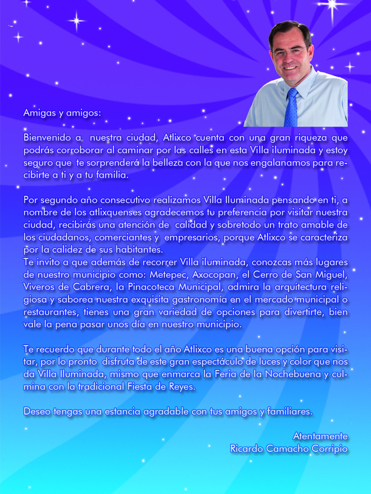
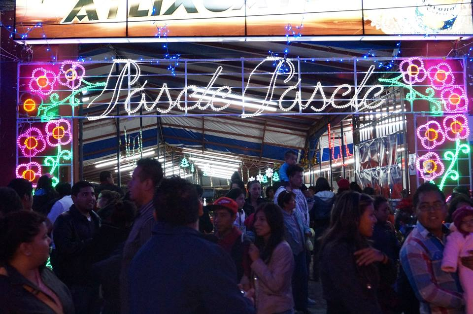
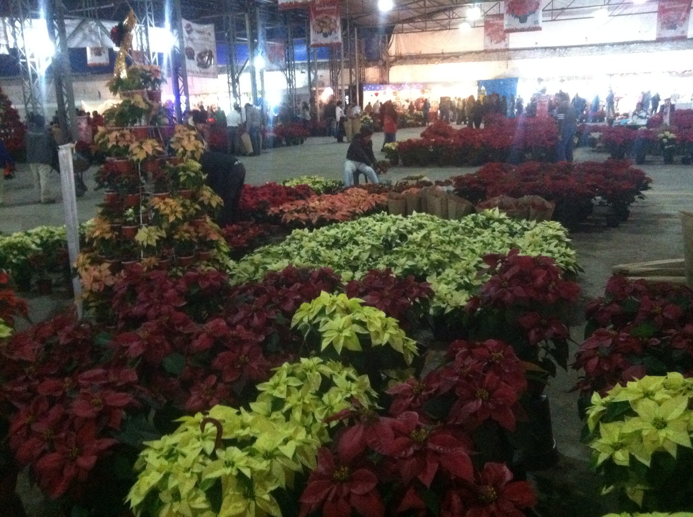
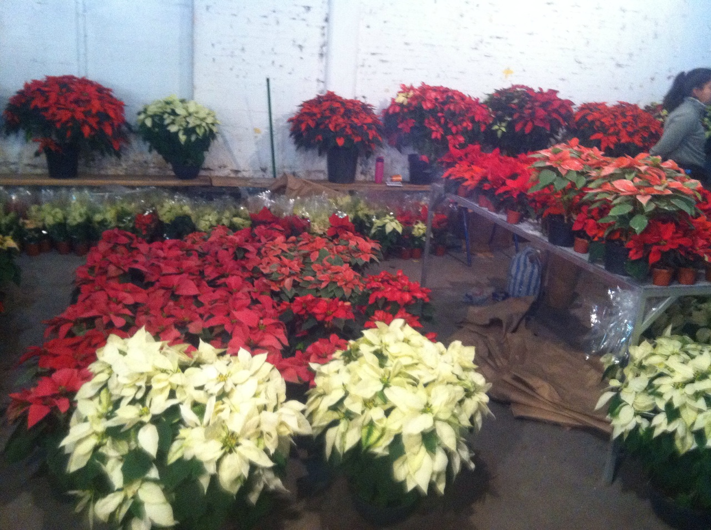
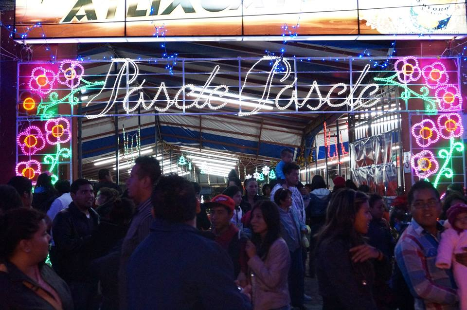
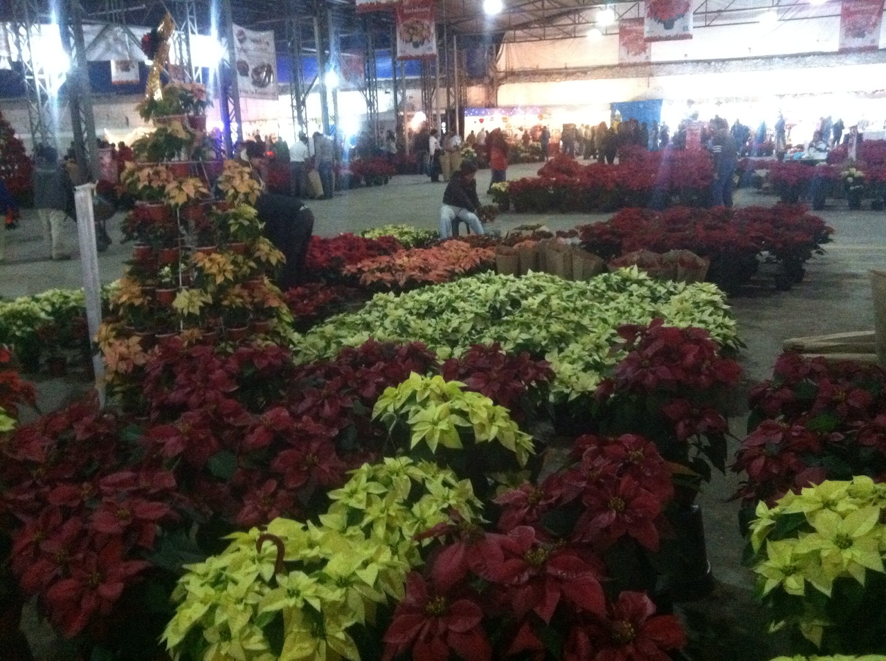
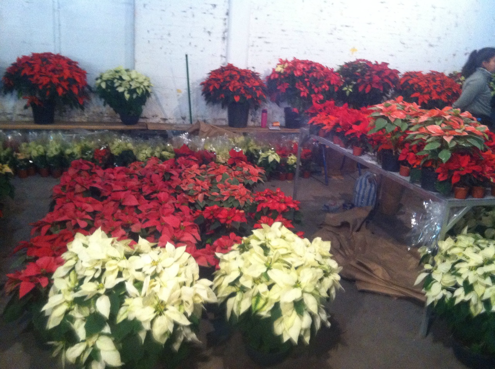

VILLA ILUMINADA
BIENVENIDOS


La “Villa Iluminada” es un recorrido que resalta la belleza arquitectónica de esta ciudad, embelleciéndola con luz. Durante más de cuarenta días las calles formarán un circuito de luz y color, vestidas de figuras y escenas alusivas a la navidad, las tradiciones y la identidad de la ciudad. Los edificios antiguos serán engalanados con luces, lo que destacará su bella arquitectura y valor histórico.
El recorrido del espectáculo iniciará en la Calle Hidalgo, bajando hacia el zócalo de Atlixco, pasa por el callejón Constitución y sigue por la calle 4 norte, frente al exconvento de El Carmen, llegará a calle Nicolás Bravo, después al boulevar Ferrocarriles y finalizará en el Parque Revolución. Nota: El escendido de luces mañana 25 de noviembre será a las 19:30 hrs. en Plaza de Armas. Horario de visita: De 7pm a 1am
El recorrido del espectáculo iniciará en la Calle Hidalgo, bajando hacia el zócalo de Atlixco, pasa por el callejón Constitución y sigue por la calle 4 norte, frente al exconvento de El Carmen, llegará a calle Nicolás Bravo, después al boulevar Ferrocarriles y finalizará en el Parque Revolución.


Desde el día que se inauguro este bello evento la gente ha asistido a los eventos que se realizan en el zócalo de esta ciudad y después realizan su recorrido para ver todas las decoraciones y figuras que nos presentan en este año la villa iluminada. La expresión de muchas de las personas es satisfactoria al ver esta distracción. Han visitado esta villa cientos de personas acompañadas de sus amigas, amigos, familias, conocidos etc. Al miso tiempo que visitamos la villa podemos observar diversos artículos y antojitos.
 





Villa iluminada es una forma de unir a la familia.Desde el día que se inauguro este bello evento la gente ha asistido a los eventos que se realizan en el zócalo de esta ciudad y después realizan su recorrido para ver todas las decoraciones y figuras que nos presentan en este año la villa iluminada. La expresión de muchas de las personas es satisfactoria al ver esta distracción. Han visitado esta villa cientos de personas acompañadas de sus amigas, amigos, familias, conocidos etc. Al miso tiempo que visitamos la villa podemos observar diversos artículos y antojitos.